 Formula4J
When an expression such as B = m/h^2 is part of your program and never changes, then you can always implement the expression directly in code. For example, you can define a method that takes m and h as parameters, does the math as ordinary hard-coded statements, and then finally returns the value B as a result. That's easy.
But what happens when the expression isn't known when the program is being written? That's not so easy, because now you need a general expression parser. In the simplest cases, or if you have enough time, you might build such a parser yourself. But you may prefer to use a tool that's already built, tested, and ready to use. Formula4j is such a tool.
The formula4j Java library has three main benefits:
Other important facts about formula4j:
What formula4j does not give you: